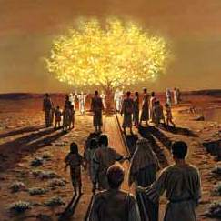

Nepali-English
Book of Mormon
Nepali-English
Book of Mormon
| An account of Lehi and his wife Sariah and his four sons, being called, (beginning at the eldest) Laman, Lemuel, Sam, and Nephi. The Lord warns Lehi to depart out of the land of Jerusalem, because he prophesieth unto the people concerning their iniquity and they seek to destroy his life. He taketh three days' journey into the wilderness with his family. Nephi taketh his brethren and returneth to the land of Jerusalem after the record of the Jews. The account of their sufferings. They take the daughters of Ishmael to wife. They take their families and depart into the wilderness. Their sufferings and afflictions in the wilderness. The course of their travels. They come to the large waters. Nephi's brethren rebel against him. He confoundeth them, and buildeth a ship. They call the name of the place Bountiful. They cross the large waters into the promised land, and so forth. This is according to the account of Nephi; or in other words, I, Nephi, wrote this record. |
| लही र उनकी पत्नी र (जेठा देखि) लमान, लमुएल, साम र नफी भनिने उनका चार छोराहरूको एक विवरण। परमप्रभुले लहीलाई यरुशलेमको भूमिबाट प्रस्थान गर्न सचेत गराउनुहुन्छ, किनभने उनले जनसामु उनीहरूका दुष्टताका वारेमा अगमवाणी गर्दछन् र उनीहरूले उनको जीवनको विनाश गर्न खोज्छन्। उनले आफ्नो परिवार सहित उजाड स्थानतिर तीन दिनको यात्रा गर्छन्। नफीले उनका दाजुहरूलाई लैजान्छन् र यहूदीहरूको अभिलेखका निम्ति यरुशलेमको भूमि फर्कन्छन्। उनीहरूका दु:खको विवरण। उनीहरूले इश्माएलका छोरीहरूलाई पत्नी बनाउँछन्। उनीहरूले उनीहरूका परिवारहरू लैजान्छन् र उजाड स्थानतिर प्रस्थान गर्दछन्। उजाड स्थानमा उनीहरूका दु:खहरू र कष्टहरू। उनीहरूको यात्राको बाटो। उनीहरू अथाह पानी भएको ठाउँमा आउँछन्। नफीका वन्धुहरूले उनका विरुद्ध विद्रोह गर्दछन्। उनले उनीहरूलाई पराजित गर्दछन् र पानीजहाज बनाउँछन्। उनीहरूले त्यो ठाउँलाई बाउन्टीफुल भन्दछन्। उनीहरू प्रतिज्ञाको भूमितिर अथाह पानी पार गर्छन् र आदि-इत्यादि। यो नफीको विवरणअनुसार हो; अथवा अर्को शब्दमा, म, नफीले यो अभिलेख लेख्दछु। |
| Chaper 1 / अध्याय १ |
| Nephi begins the record of his people-Lehi sees in vision a pillar of fire and reads from a book of prophecy-He praises God, foretells the coming of the Messiah, and prophesies the destruction of Jerusalem-He is persecuted by the Jews. About 600 B.C. |
| नफी उनका जनको अभिलेखको सुरुवात गर्छन्—लही दर्शनमा आगोको खम्बा देख्छन् र अगमवाणीको पुस्तक पढ्छन्—उनले परमेश्वरको प्रशंसा गर्छन्, मसीहको आगमनको पूर्व वाणी गर्छन् र यरुशलेमको नाशको अगमवाणी गर्छन्। लगभग ई.पू. ६००। |
| 1. I, Nephi, having been born of goodly parents, therefore I was taught somewhat in all the learning of my father; and having seen many afflictions in the course of my days, nevertheless, having been highly favored of the Lord in all my days; yea, having had a great knowledge of the goodness and the mysteries of God, therefore I make a record of my proceedings in my days. |
| १. म नफी असल मातापिताबाट जन्मिएको हुनाले, त्यसकारण, मेरा पिताको सबै ज्ञानमा मलाई केही हदसम्म शिक्षा दिइयो र मैले मेरा दिनहरूको अन्तरालमा धेरै कष्टहरू देखेको, परन्तु, मेरा सारा दिनहरूमा परमप्रभुबाट धेरै कृपा पाएको हुनाले; हो, परमेश्वरको कृपा र रहस्यहरूको महान् ज्ञान भएको हुनाले, त्यसकारण म मेरा दिनहरूका काम-कारबाहीहरूको अभिलेख बनाउँदछु। |
| 2. Yea, I make a record in the language of my father, which consists of the learning of the Jews and the language of the Egyptians. |
| २ हो, म मेरा पिताको भाषामा अभिलेख बनाउँदछु, जुन यहूदीहरूको ज्ञान र मिश्रीहरूको भाषाबाट बनेको छ। |
| 3. And I know that the record which I make is true; and I make it with mine own hand; and I make it according to my knowledge. |
| ३ अनि म जान्दछु कि मैले बनाउने अभिलेख साँचो छ; र म यसलाई मेरा आफ्नै हातले बनाउँदछु र म यसलाई मेरो ज्ञानअनुसार बनाउँदछु। |
| 4. For it came to pass in the commencement of the first year of the reign of Zedekiah, king of Judah, (my father, Lehi, having dwelt at Jerusalem in all his days); and in that same year there came many prophets, prophesying unto the people that they must repent, or the great city Jerusalem must be destroyed. |
| ४ किनकि यहूदाका राजा सिदकियाहको शासनको पहिलो वर्षको प्रारम्भमा यस्तो हुन गयो, (मेरा पिता लही उहाँका सारा दिनहरूमा यरुशलेममा बस्नुभएकोले); अनि त्यही वर्षमा त्यहाँ धेरै अगमवक्ताहरू मानिसहरूसामु तिनीहरूले पश्चात्ताप गर्नु पर्ने अन्यथा महान् सहर यरुशलेमको विनाश हुने अगमवाणी गर्दै आए। |
| 5. Wherefore it came to pass that my father, Lehi, as he went forth prayed unto the Lord, yea, even with all his heart, in behalf of his people. |
| ५ यसकारण, यस्तो हुन गयो कि जब मेरा पिता लही अघि बढ्नुभयो, उहाँले आफ्नो सारा हृदयको साथ समेत उहाँका मानिसहरूको तर्फबाट परमप्रभुसामु प्रार्थना गर्नुभयो। |
| 6 And it came to pass as he prayed unto the Lord, there came a pillar of fire and dwelt upon a rock before him; and he saw and heard much; and because of the things which he saw and heard he did quake and tremble exceedingly. |
| ६ अनि यस्तो हुन गयो जब उहाँले परमप्रभुसामु प्रार्थना गर्नुभयो, त्यहाँ एउटा आगोको खम्बा आयो र उहाँसामुन्ने एउटा चट्टानमाथि बस्यो; र उहाँले धेरै देख्नुभयो र सुन्नुभयो; र उहाँले देखेका र सुनेका कुराहरूको कारणले उहाँ काँप्नु भयो र अत्यन्तै थरथराउनुभयो। |
| 7 And it came to pass that he returned to his own house at Jerusalem; and he cast himself upon his bed, being overcome with the Spirit and the things which he had seen. |
| ७ अनि यस्तो हुन गयो कि उहाँ यरुशलेममा उहाँको आफ्नै घरमा फर्कनुभयो; र आत्माद्वारा र आफूले देखेका कुराहरूबाट विह्वल भएर उहाँ स्वयम् आफ्नो ओछ्यानमा पल्टनुभयो। |
| 8 And being thus overcome with the Spirit, he was carried away in a vision, even that he saw the heavens open, and he thought he saw God sitting upon his throne, surrounded with numberless concourses of angels in the attitude of singing and praising their God. |
| ८ अनि आत्माद्वारा नियन्त्रित भएर उहाँलाई एउटा दर्शनमा पर लगियो, यतिसम्म कि उहाँले स्वर्गहरू खुलेको देख्नुभयो, अनि उहाँले सोंच्नु भयो उहाँले गाउने र आफ्ना परमेश्वरको प्रशंसा गर्ने प्रवृतिका असङ्ख्य स्वर्गदूतहरूको समूहले घेरिएर आफ्नो सिंहासन माथि बसिरहेको देख्नुभयो। |
| 9 And it came to pass that he saw One descending out of the midst of heaven, and he beheld that his luster was above that of the sun at noon-day. |
| ९ अनि यस्तो हुन गयो कि उहाँले एक जनालाई स्वर्गको बीचबाट ओर्लदै गरेको देख्नुभयो, अनि उहाँले देख्नुभयो कि उहाँको तेज मध्यदिनको सूर्यको भन्दा उच्च थियो। |
| 10 And he also saw twelve others following him, and their brightness did exceed that of the stars in the firmament. |
| १० अनि उहाँले आफूलाई पछ्याइरहेका अन्य बाह्रलाई पनि देख्नुभयो, अनि उनीहरूको चमक आकाशका ताराहरूको भन्दा बढी थियो। |
| 11 And they came down and went forth upon the face of the earth; and the first came and stood before my father, and gave unto him a book, and bade him that he should read. |
| ११ अनि उनीहरू अवतरण गरे र पृथ्वीको सतहमाथि अघि बढे; र पहिलो चाहिँ आए र मेरा पिताअगाडि खडा भए र उहाँलाई एउटा पुस्तक दिए र उहाँले पढ्नुपर्छ भनेर अह्राए। |
